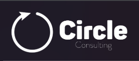
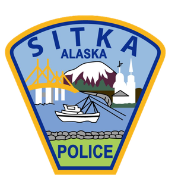

Portfolio BTS SIO option SISR
MARECAR Nawfal
Je conçois, j'administre et je sécurise des architectures réseaux et systèmes, avec une attention particulière au maintien en condition opérationnelle et à la protection des données.
Voir mes projets Me contacterFormation
BTS SIO option SISR, 2ème année (session 2026).
Entreprise
Circle Consulting, à Sèvres (92).
Domaines
RéseauxSystèmesCybersécuritéÀ propos
Je m'appelle MARECAR Nawfal, j'ai 19 ans, et je suis en alternance chez Circle Consulting.
Je suis passionné par les nouvelles technologies et mon objectif principal est de faire carrière dans ce domaine.
J'ai suivi un baccalauréat professionnel Systèmes Numériques (SN), option C (RISC – Réseaux Informatiques et Systèmes Communicants), au lycée Claude Chappe à Nanterre, de 2022 à 2025.
Expériences professionnelles
NOMIOS
- Assistance technique et support client sur les solutions de cybersécurité et réseau
- Veille technologique et formation des équipes internes et des clients
- Rédaction de rapports d'audit et recommandations en matière de sécurité
Stage du 12 novembre au 20 décembre 2024.
Voir l'attestation de stage (PDF)PC MARKET
- Réparations des PC
- Installations des logiciels Windows
- Réception clientèle
DM INFORMATIQUE
- Réparations des PC
- Réparations des mobiles
- Installations des logiciels Windows
- Changement de batteries des téléphones
- Réception clientèle
Mon CV
Aperçu de mon CV

Mon entreprise : Circle Consulting
Circle Consulting est une entreprise française immatriculée à Sèvres (92310, Hauts-de-Seine). Son siège social est situé au 2 Avenue de la Cristallerie.
- SIREN : 979 460 938
- SIRET (siège) : 979 460 938 00025
- N° TVA : FR44979460938
- Code NAF/APE : 47.91B – Vente à distance sur catalogue spécialisé
- Date de création : 12 septembre 2023
- Forme juridique : SAS (Société par actions simplifiée)
- Capital social : 720 000 €
- Effectif : au moins 10 salariés
- Chiffre d'affaires : 7,5 M€
Mon poste
Technicien informatique chez Circle Consulting, en alternance dans le cadre de mon BTS SIO SISR.
SAV & réparationDiagnosticSystèmes & réseauxServices & objectifs
Passionné par la technique, j'accompagne mes clients dans l'optimisation de leur environnement numérique à travers trois piliers :
- Maintenance & Réparation : diagnostic précis et remise en état de MacBook et PC.
- Gestion MDM : déploiement et sécurisation de flottes d'appareils à distance.
- Configuration & Réseaux : installation complète de systèmes et conception de réseaux performants et sécurisés.
Mes activités
En tant que technicien chez Circle Consulting, je m'occupe principalement du Service Après-Vente (SAV) pour le matériel informatique. Lorsqu'un client nous renvoie un appareil en panne, je réalise un diagnostic pour trouver l'origine du problème. Je m'occupe ensuite des réparations, que ce soit en changeant une pièce défectueuse ou en réglant un souci de logiciel. Pour finir, je teste toujours l'appareil pour m'assurer qu'il fonctionne parfaitement avant de le renvoyer au client.
Missions (E5)
Documentation des projets techniques et des solutions d'infrastructure mises en œuvre durant mon cursus.
Tableau de synthèse
Ce document récapitule mes réalisations et les compétences du bloc SISR que j'ai travaillées.
Aperçu de mon Tableau de Synthèse
Mes projets et travaux pratiques
Projets en entreprise – Circle Consulting
Documentation
Aperçu de mon livrable
Épreuve E6
L'épreuve E6 (Session 2026) du BTS SIO SISR évalue la capacité à concevoir, déployer et administrer une infrastructure réseau complète. Ici, les situations professionnelles se déroulent au sein de la société StadiumCompany, spécialisée dans les activités d'administration et de gestion. Pour la conception et l'implémentation de ses solutions systèmes et réseaux, elle s'appuie sur l'expertise de NetworkingCompany.
🎯 Objectifs de l'épreuve
Cette épreuve valide la maîtrise des services réseaux essentiels et la capacité à répondre aux besoins d'une organisation :
- Conception : analyse des besoins et choix d'architecture (VLAN, DMZ).
- Mise en œuvre : déploiement de services Windows Server 2022 (AD, DNS, DHCP) et équipements Cisco.
- Exploitation : supervision avec Nagios XI et gestion de parc via GLPI.
Les réalisations en cours de formation

Réalisation n°1
Mise en œuvre d'une infrastructure réseau et système sécurisée pour le service restauration
Le restaurant du StadiumCompany a modernisé son système de prise de commande en utilisant des tablettes sans fil. L'enjeu principal est de permettre un accès sécurisé aux menus et au logiciel de caisse, tout en assurant une isolation stricte des flux de données pour respecter les exigences de sécurité et de conformité PCI-DSS.
Réalisation n°2
Optimisation de la gestion de parc et de la disponibilité des services métier
La gestion des terminaux de commande et des caisses (POS) au sein du restaurant nécessite un inventaire centralisé pour assurer un suivi efficace. De plus, en raison de la criticité du réseau Wi-Fi pour l'activité, une supervision constante est indispensable pour garantir la continuité de service et permettre une réactivité immédiate de la DSI en cas d'incident.
La Veille Technologique
Qu'est-ce qu'une veille technologique ?
La veille technologique consiste à suivre régulièrement l'actualité d'un domaine technique pour rester informé des nouveautés, des changements et des risques. Pour un technicien, c'est indispensable : cela permet d'anticiper les problèmes et de conseiller correctement les clients.
Qu'est-ce que j'utilise pour ma veille technologique ?
J'utilise Google Actualités avec une alerte sur « Windows 10 » et « Windows 11 », ainsi que des sites spécialisés francophones : Le Crabe Info, IT-Connect, Clubic et 01net. Je consulte aussi le site officiel Microsoft pour les dates de fin de support. Cela me prend environ 20 minutes par jour.
Mon sujet de veille : la fin de Windows 10 et la migration vers Windows 11
Pourquoi ce sujet ?
Chez Circle Consulting, je fais du SAV et de la réparation de PC. Je vois passer beaucoup de machines encore sous Windows 10, dont certaines ne sont pas compatibles avec Windows 11. Le support de Windows 10 est terminé depuis le 14 octobre 2025 : sans mise à jour de sécurité, ces PC deviennent une porte d'entrée pour les attaques. Suivre ce sujet me permet de savoir quoi conseiller aux clients : migrer, souscrire aux mises à jour étendues (ESU), ou changer de machine.
Patch Tuesday d'octobre 2026 : 1 411 failles corrigées
Source : Le Crabe Info
Résumé : La mise à jour KB5127648 pour Windows 11 (24H2, 25H2 et 26H2) corrige 1 411 vulnérabilités dont 70 critiques. Trois failles « zero-day » sont concernées, dont une dans l'interpréteur Windows (CVE-2026-96951) déjà exploitée par des attaquants : elle permettait de contourner la protection « Mark of the Web » sur les fichiers téléchargés.
Ce que ça change pour moi : Un PC resté sous Windows 10 sans ESU ne reçoit plus ces correctifs. Je dois vérifier que les PC que je rends aux clients sont bien à jour, et expliquer le risque à ceux qui refusent de migrer.
Windows 11 26H2 : la version à installer pour gagner un an de support
Source : Selectra
Résumé : Microsoft a publié Windows 11 26H2 le 29 septembre 2026. Elle est supportée jusqu'au 10 octobre 2028, contre le 12 octobre 2027 pour la 25H2. La version 24H2, elle, reçoit sa dernière mise à jour de sécurité le 13 octobre 2026. Le passage se fait par un simple « package d'activation » depuis Windows Update, avec un seul redémarrage.
Ce que ça change pour moi : Quand je réinstalle ou mets à jour un PC, je dois le passer directement en 26H2 pour que le client soit tranquille le plus longtemps possible, et repérer les PC encore en 24H2 qui ne sont plus protégés.
Microsoft prolonge les mises à jour de Windows 10 jusqu'en 2027
Source : Le Comptoir du Hardware
Résumé : Le programme ESU (Extended Security Updates) pour les particuliers, qui devait s'arrêter en octobre 2026, est prolongé jusqu'au 12 octobre 2027. Il reste gratuit si l'on synchronise ses paramètres avec un compte Microsoft, sinon 1 000 points Rewards ou 30 $. Une licence couvre jusqu'à 10 appareils. Selon StatCounter, Windows 10 équipe encore environ 27 % des PC en France.
Ce que ça change pour moi : Pour un client dont le PC n'est pas compatible Windows 11 et qui ne veut pas en racheter un, je peux lui proposer l'inscription à l'ESU comme solution temporaire, en lui précisant que ça s'arrête en octobre 2027.